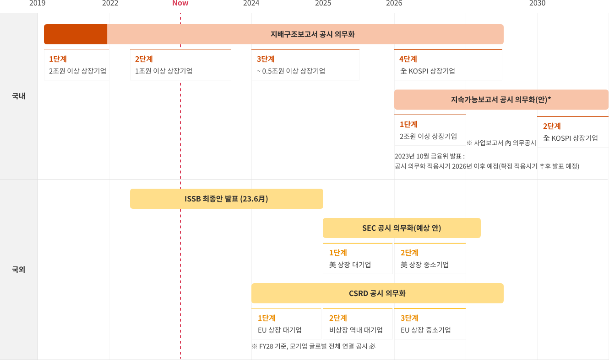

Search
ESG 공시
ESG 주요 공시 기관별 기준서의 프레임워크를 소개하고, 각 기준서의 해설/사례, 관련 컨텐츠를 제공합니다.

ESG 주요 기관별 공시 · 보고
| 구분 | 설명 | 관련URL | |
|---|---|---|---|
| 국제 | GRI (Global Reporting Initiative) 가이드라인 |
지속가능보고서 작성에 대한 가이드라인 제공 | GRI |
| ISSB (International Sustainability Standards Board) 기준서 |
IFRS(국제재무보고기준) 재단 산하의 위원회로서 지속가능성 공시를 위한 기준 제공 | IFRS | |
| TNFD (Taskforce on Nature-related Financial Disclosures) 기준서 |
G20 요청에 따라 국제 재무안정위원회(FSB)에 의해 설립 되었으며, 기업과 투자자가 자연에 대한 재무영향을 관리할 수 있도록 관련 재무 정보의 표준화와 투명성 촉진 | TNFD | |
| TCFD (Task Force on Climate-Related Financial Disclosures) 기준서 |
기업의 기후 위험 및 기회 정보의 공개 필요성을 강조하며, 기후변화 관련 위험과 기회에 대한 평가·보고 지침을 제공 | TCFD | |
| EU | CSRD (Corporate Sustainability Reporting Directive) 지침 |
유럽 재무보고자문그룹에서 제공하는 기업지속가능성에 대한보고지침 | 유럽재무보고자문그룹 |
| 미국 | SEC (Securities and Exchange Commission, 증권거래위원회) 기준안 |
미국 상장기업들을 대상으로 ESG 공시 기준 및 방안을 제시·발표 | SEC |
| 한국 | KSSB (Korea sustainability Standards Board) 기준서 |
한국회계기준원이 유관기관과 협력하여 ISSB의 국제지속가능성 기준을 검토하여 한국 공시 기준으로 제정 | - |
ESG 주요 공시·보고 의무화 추진

ESG 주요 기관별 공시 · 보고
-
국제
-
GRIGlobal Reporting Initiative지속가능보고서 작성에 대한 가이드라인 제공
-
ISSBInternational Sustainability Standards Board지속가능보고서 작성에 대한 가이드라인 제공
-
TNFDTaskforce on Nature-related Financial DisclosuresG20 요청에 따라 국제 재무안정위원회(FSB)에 의해 설립되었으며 기업과 투자자가 자연에 대한 재무영향을 관리할 수 있도록 관련 재무 정보의 표준화와 투명성 촉진공
-
TCFDTaskforce on Nature-related Financial Disclosures기업의 기후 위험 및 기회 정보의 공개 필요성을 강조하며 기후변화 관련 위험과 기회에 대한 평가·보고 지침을 제공
-
-
EU
-
CSRDCorporate Sustainability Reporting Directive유럽 재무보고자문그룹에서 제공하는 기업지속가능성에 대한 보고지침
-
-
미국
-
SECSecurities and Exchange Commission 증권거래위원회미국 상장기업들을 대상으로 ESG 공시 기준 및 방안을 제시·발표
-
-
한국
-
KSSBKorea sustainability Standards Board한국회계기준원이 유관기관과 협력하여 ISSB의 국제지속가능성 기준을 검토하여 한국 공시 기준으로 제정
-